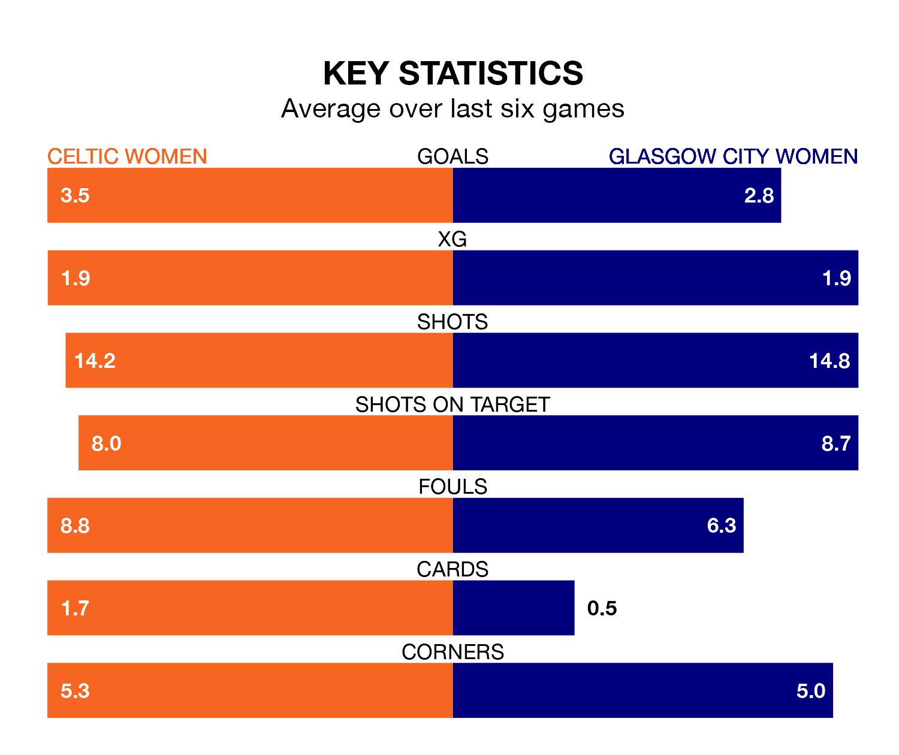

Two of SWPL 1's top sides face each other at the Excelsior Stadium in Wednesday's late kick-off, when table-topping Celtic Women host third-placed Glasgow City Women.
Celtic have picked up 23 wins and two draws from 27 games so far this season, and sit six points above the visitors going into the 6.010pm match.
Glasgow City, meanwhile, have won 21 and drawn two, picking up 65 points.
With 117 goals in 27 games so far this season, Celtic are the league's highest scorers with 4.3 goals per game. And they are conceding fewer than average, letting in 15 goals at a rate of 0.6 per game.
Glasgow City are also above average scorers, with 3.0 goals per game, compared to a league average of 2.1. They have conceded 0.7 goals per game.
The home team are in exceptional form in SWPL 1, with six wins and no losses from their last six games.
With four wins and two losses over that period, the visitors' form is much worse – they have taken 12 points from 18, compared to Celtic's 18.
In Kelsey Daugherty, Celtic can rely on one of the league's safest pair of hands. She has kept 11 clean sheets in her 22 appearances this season, and no 'keeper has prevented the opposition scoring more often in SWPL 1.
In Glasgow City's net, Lee Alexander has nine clean sheets in 19 games. She has conceded a goal every 107 minutes, 40% more often than the 152 minutes between goals for Daugherty.
In the last 10 years, Celtic and Glasgow City have played each other on 15 occasions. Celtic won six of them, Glasgow City seven, and they drew twice.
On average, Celtic scored 1.3 goals and Glasgow City 1.3 in those matches.
Their last meeting was on March 31, when Celtic won 2-1 away.
Celtic's last match was on April 21, a 5-0 win against Hearts Women, with Murphy Agnew (three), Lucy Ashworth-Clifford and Natasha Jane Flint getting the goals for Celtic.
Glasgow City beat Hibernian Women 1-0 last time out, also on April 21, with Lauren Davidson on the scoresheet.
Updated: 10:44 (UTC), 30/04/24